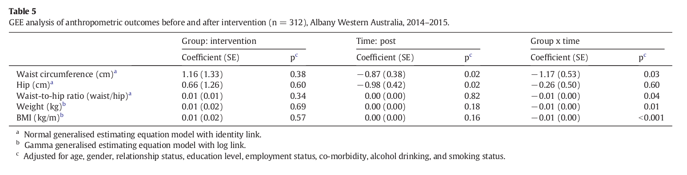

<?xml version="1.0" encoding="UTF-8"?>
<table title="table5" id="table5" class="tabcontent" xmlns="http://www.w3.org/1999/xhtml">
 <tr>
  <td>
   
   <p>../../cm-ucl/corpus-oa-pmr-v02/10.1016_j.ypmed.2016.05.012/tables/table5/table.png</p>
  </td>
  <td>
   <table class="table">
    <caption/>
    <tr>
     <th class="cell">Coefficient (SE) </th>
     <th class="cell">p ^{c} </th>
     <th class="cell">Coeffcient (SE) </th>
     <th class="cell">p ^{c} </th>
     <th class="cell">Coefficient (SE) </th>
     <th class="cell">p ^{c} </th>
    </tr>
    <tr>
     <td class="cell">Waist circumference (cm) ^{a}</td>
     <td class="cell">1.16 (1.33)</td>
     <td class="cell">0.38</td>
     <td class="cell">− 0.87 (0.38)</td>
     <td class="cell">0.02</td>
     <td class="cell">− 1.17 (0.53)</td>
     <td class="cell">0.03</td>
    </tr>
    <tr>
     <td class="cell">Hip (cm)^{a}</td>
     <td class="cell">0.66 (1.26)</td>
     <td class="cell">0.60</td>
     <td class="cell">− 0.98 (0.42)</td>
     <td class="cell">0.02</td>
     <td class="cell">− 0.26 (0.50)</td>
     <td class="cell">0.60</td>
    </tr>
    <tr>
     <td class="cell">Waist-to-hip ratio (waist/hip) ^{a}</td>
     <td class="cell">0.01 (0.01)</td>
     <td class="cell">0.34</td>
     <td class="cell">0.00 (0.00)</td>
     <td class="cell">0.82</td>
     <td class="cell">− 0.01 (0.00)</td>
     <td class="cell">0.04</td>
    </tr>
    <tr>
     <td class="cell">Weight (kg) ^{b}</td>
     <td class="cell">0.01 (0.02)</td>
     <td class="cell">0.69</td>
     <td class="cell">0.00 (0.00)</td>
     <td class="cell">0.18</td>
     <td class="cell">− 0.01 (0.00)</td>
     <td class="cell">0.01</td>
    </tr>
    <tr>
     <td class="cell">BMI (kg/m) ^{b}</td>
     <td class="cell">0.01 (0.02)</td>
     <td class="cell">0.57</td>
     <td class="cell">0.00 (0.00)</td>
     <td class="cell">0.16</td>
     <td class="cell">− 0.01 (0.00)</td>
     <td class="cell">b0.001</td>
    </tr>
   </table>
   <p>../../cm-ucl/corpus-oa-pmr-v02/10.1016_j.ypmed.2016.05.012/tables/table5/table.svg.html</p>
  </td>
 </tr>
</table>
